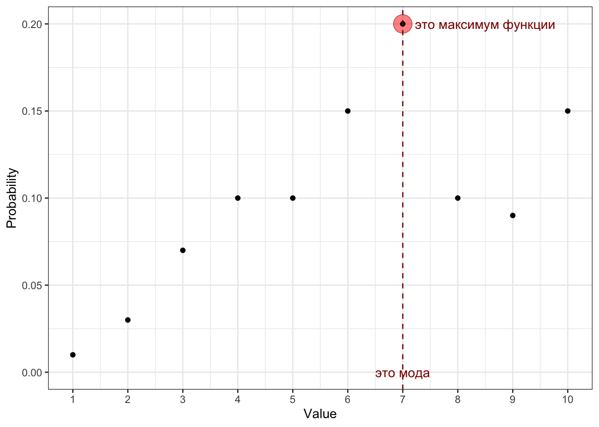
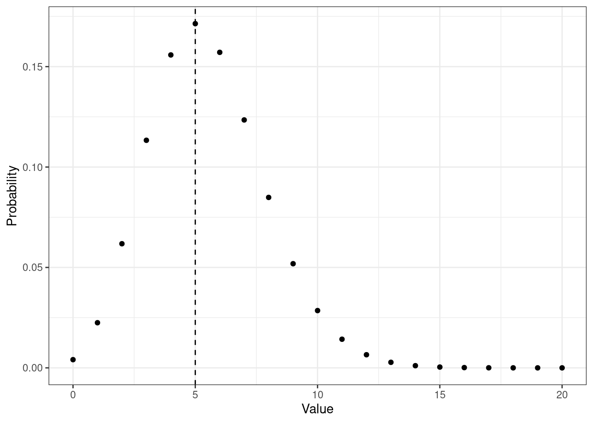
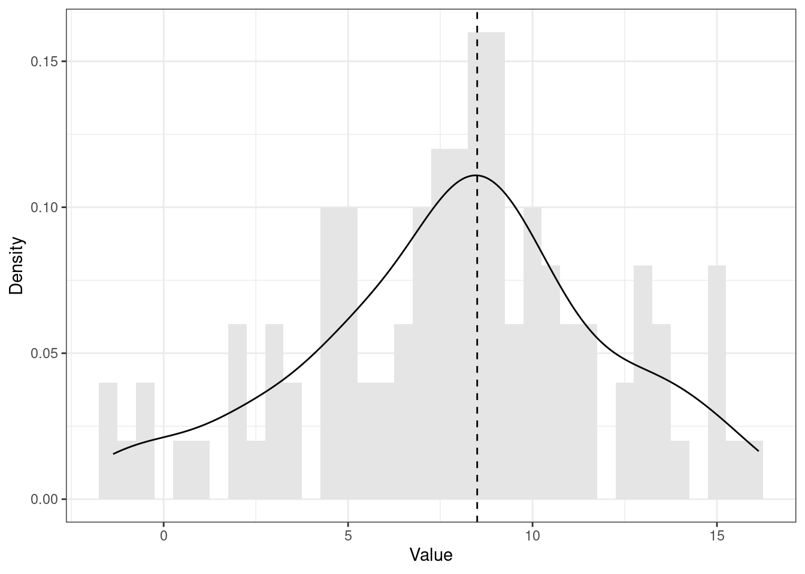
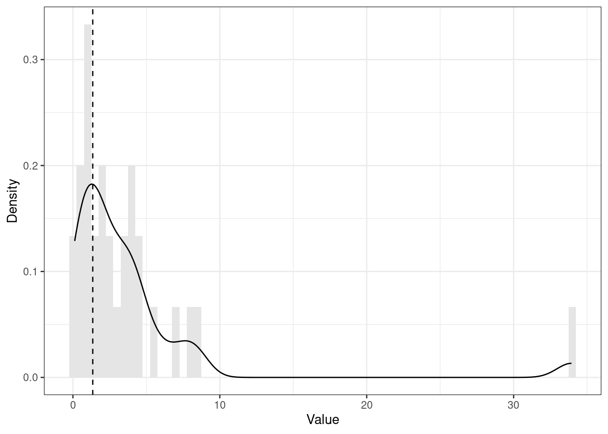
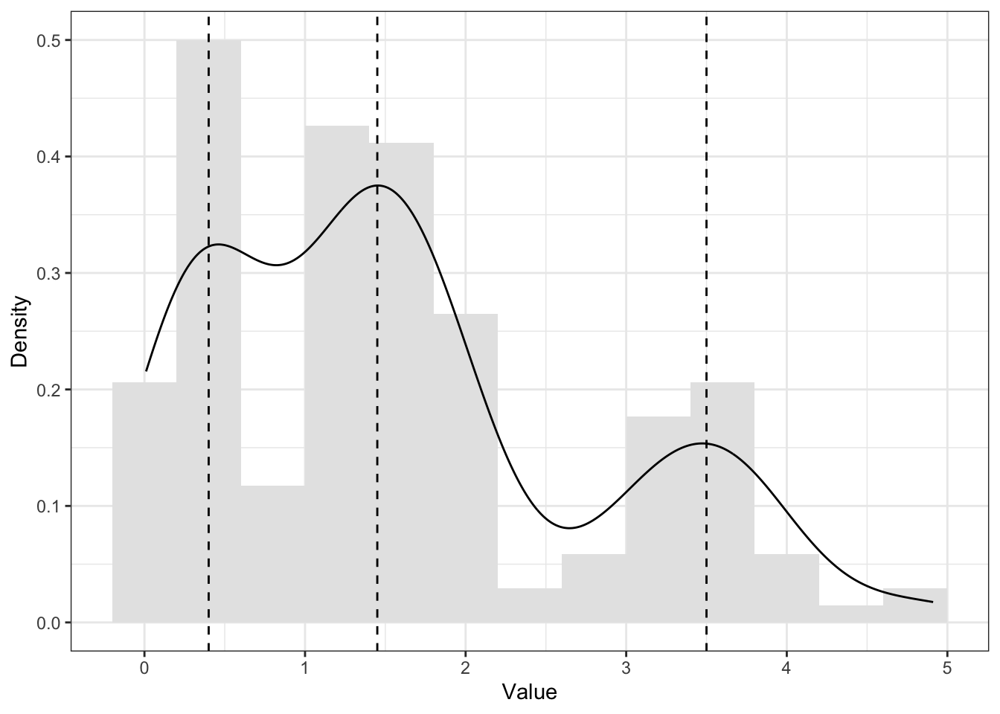
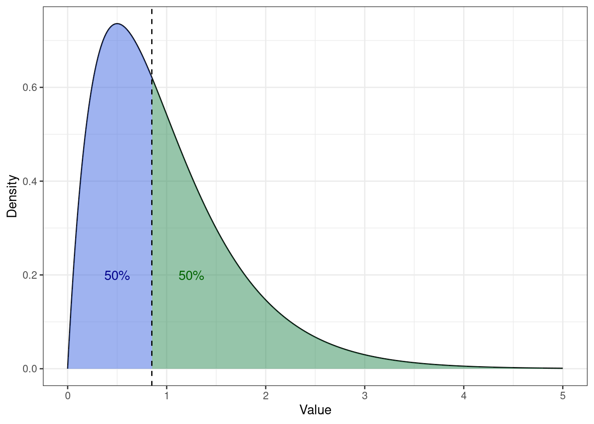

24 Описательные статистики
24.1 Виды статистики
Напомним себе, что статистика [как набор методов и инструментов] делится на два вида — описательная статистика и статистика вывода.
- Описательная статистика (descriptive statistics1) занимается обработкой статистических данных, их наглядным представлением, и собственно описанием через некоторые характеристики.
- Эти характеристики, количественно описывающие особенности имеющихся данных, называются описательными статистиками (descriptive statistics2).
- Задача описательной статистики — ёмко описать имеющиеся данные и составить на основе этих описаний общее представление о них, а также обнаружить особенности, которые могут повлиять на дальнейший анализ.
- Статистика вывода (inferential statistics) занимается поиском ответов на содержательные вопросы, которые мы задаем данным в ходе их анализа в рамках научных и практических исследований.
- Состоит из двух компонентов — тестирования статистических гипотез и статистических методов.
В названии книги упомянуто «машинное обучение». Иногда его причисляют к статистике, иногда рассматривают отдельно. На самом же деле, статистические методы лежат где-то между статистикой вывода и машинным обучением.
Почему?
Дело в том, что на статистические методы можно смотреть по-разному.
- Если нашей задачей является поиск ответов на исследовательские вопросы о закономерностях, о связи каких-либо факторов или влиянии переменных друг на друга, то мы будем смотреть на статистические модели с точки зрения статистики вывода. Это позволит нам находить ответы на интересующие нас вопросы — причем не важно, говорим мы о научных исследованиях или об исследованиях в индустрии.
- Если перед нами стоит задача хорошо предсказывать одни переменные на основании значений других — например, выдавать рекомендации на Яндекс.Музыке или в Яндекс.Лавке — то мы будем смотреть на те же статистические модели с точки зрения машинного обучения.
То есть, модели в анализе данных и машинном обучении одни и те же, но то, какую модель мы назовем хорошей и как мы эту «хорошесть» определим, будет отличаться в зависимости от задачи — исследовательская или предиктивная — которая перед нами стоит.
24.2 Меры центральной тенденции
Итак, мы хотим описать наши данные. Точнее, распределения переменных, которые у нас в данных есть. Хотим сделать это просто и ёмко. Насколько просто и ёмко? Ну, допустим максимально — одним числом. Для этого неплохо подойдет значение переменной, которое лежит в центре распределения.
Как мы будем искать, что там в центре распределения? Зависит от шкалы (Stevens 1946), в которой измерена конкретная переменная (Таблица 24.1).
| Шкала | Мера центральной тенденции |
|---|---|
| Номинальная | Мода |
| Порядковая | Медиана |
| Интервальная | Среднее арифметическое |
| Абсолютная | Среднее арифметическое, геометрическое и др. |
Однако есть некоторые нюансы.
24.2.1 Мода
Самый простой вариант найти центральную тенденцию — это определить наиболее часто встречающееся значение переменной. Это значение называется модой (mode).
Определение 24.1 Мода [дискретной переменной] — наиболее часто встречающееся значение данной переменной.
Например, у нас есть следующий ряд наблюдений по какой-то переменной:
\[ \begin{bmatrix} 1 & 3 & 4 & 6 & 3 & 2 & 3 & 3 & 2 & 4 & 1 \end{bmatrix} \]
Если мы посчитаем, сколько раз встретилась каждое значение переменной и составим таблицу частот, то получим следующее:
\[ \begin{matrix} \text{Значение} & 1 & 2 & 3 & 4 & 6 \\ \text{Частота} & 2 & 2 & 4 & 2 & 1 \end{matrix} \]
Очевидно, что \(3\) встречается чаще других значений — это и есть мода.
Понятно, что если на нашей шкале нет чисел, а есть текстовые лейблы, это ничего не меняет. Пусть у нас есть переменная с кодами аэропортов:
\[ \begin{bmatrix} \text{DME} & \text{LED} & \text{IST} & \text{AER} & \text{IST} &\text{SVO} & \text{LED} & \text{VKO} & \text{LED} & \text{IST} & \text{IST} & \text{VKO} & \text{AER} & \text{DME} \end{bmatrix} \]
\[ \begin{matrix} \text{Значение} & \text{DME} & \text{LED} & \text{IST} & \text{AER} & \text{SVO} & \text{VKO}\\ \text{Частота} & 2 & 3 & 4 & 2 & 1 & 2 \end{matrix} \]
Мода — \(\text{IST}\) (Международный аэропорт Стамбула, İstanbul Havalimanı).
Так мы действуем в случае с эмпирическим распределением. Если нам известна функция вероятности переменной (probability mass function, PMF), то мы можем определить моду, основываясь на ней:
Определение 24.2 Мода [дискретной переменной] — это значение переменной, при котором её функция вероятности принимает своё максимальное значение.
\[ \text{mode}(X) = \arg \max(\text{PMF}(X)) = \arg \max_{x_i}(\mathbb{P}(X = x_i)), \tag{24.1}\]
где \(X\) — дискретная случайная величина, \(x_i\) — значение этой случайной величины.

Окей, мы видим, что мода отлично считается на дискретных переменных. А как же быть с непрерывными?
Напомним себе, что вероятность того, что непрерывная случайная величина примет своё конкретное значение, равна нулю. Из этого следует, что все значения непрерывной случайное величины уникальны — каждое повторяется только один раз. Получается, что строить частотную таблицу бессмысленно…
По этой причине для непрерывных переменных моду не считают.
24.2.1.1 Мода для непрерывной переменной
Да, это так. Действительно, посчитать моду для непрерывной переменной способом, аналогичным тому, что мы увидели выше, не получится. Однако математиков это не остановило.
Если мы посмотрим на график плотности вероятности (probability density function, PDF), который является аналогом PMF для дискретных переменных, мы увидим, что какие-то значения встречаются чаще, а какие-то реже. Что в общем-то логично. Напомним себе, как это выглядит, например, для любимого [стандартного] нормального распределения:

То есть, самые часто встречающиеся значения — это пик распределения. Там и должна быть мода. Визуально это выглядит достаточно справедливо.
Математики так и решили:
Определение 24.3 Мода [непрерывной переменной] — это значение переменной, при котором её функция плотности вероятности достигает локального3 максимума.
\[ \text{mode}(X) = \arg \max(\text{PDF}(X)) = \arg \max_{x \in S}f(x), \tag{24.2}\]
гдe \(X\) — непрерывная случайная величина, \(x\) — значение этой случайной величины, \(S\) — имеющаяся выборка значений переменной.

Хотя моду для непрерывной переменной вычислить можно, обычно этого не делают, так как достаточно других мер центральной тенденции для описания распределения.
- мода — это значение переменной, которое встречается в выборке чаще всего
- на практике она рассчитывается через построение частотной таблицы
- используется с дискретными (номинальными и порядковыми) переменными
- для непрерывных переменных её рассчитать можно, но обычного этого не делают
24.2.2 Унимодальные и полимодальные распределения
Нормальное распределение, как и ряд других — биномиальное, отрицательное биномиальное, пуассоновское — относятся к унимодальным. Такие распределения имеют только одну моду (см. Рисунок 24.4, Рисунок 24.5, Рисунок 24.6).



Это теоретические распределения. С эмпирическими распределениями дело обстоит так же, хотя они обычно менее гладенькие и красивые (см. Рисунок 24.7 и Рисунок 24.8).

set.seed(314). Пунктирной линией обозначено положение моды.
set.seed(314). Пунктирной линией обозначено положение моды.Однако на практике возможны и другие ситуации. Например, такие (Рисунок 24.9, Рисунок 24.10):

set.seed(65). Пунктирными линиями обозначены положения мод.
set.seed(65). Пунктирными линиями обозначены положения мод.В первом случае (Рисунок 24.9) мы видим два локальных максимума функции плотности вероятности — такое распределение называется бимодальным. Во втором случае (Рисунок 24.10) функция плотности вероятности имеет три локальных максимума — такое распределение называется полимодальным. Бимональное распределение является частным случаем полимодального распределения.
В прицнипе, пиков может быть и больше, однако при работе с реальными данными чаще всего мы сталкиваемся с бимодальными распределениями.
Что это значит и что с этим делать?
Бимодальное распределение сигнализирует нам о гетерогенности выборки. Если мы видим два выделяющихся пика, стоит подумать о том, что наша выборка неоднородна и в ней выделяются две подвыборки. Посмотрим на структуру выборки из примера выше (Рисунок 24.11):

Действительно, наше распределение состоит из двух других распределений, у каждого из которого есть своя мода — поэтому итоговое распределение получается бимодальным. Конечно, сейчас нам это очень удобно показать, потому что мы знаем, как это распределение генерировалось. Когда же у нас есть реальные данные и мы там наблюдаем такого «верблюда», бывает достаточно сложно сказать, что «пошло не так».
Само по себе распределение не даст нам ответ на вопрос, почему оно бимодальное — чтобы выяснить причины такого поведения переменной нам потребуются другие данные. Обычно у вас в данных есть «соцдем» — пол, возраст, сфера и место работы, уровень обрвазования и др. Попробуйте построить распределение с разбиением исследуемой бимодальной переменной по переменным «соцдема». Это, к сожалению, не является рецептом успеха, поскольку причина гетерогенности выборки может и не содержаться в ваших данных, но такое изучение данных станет хорошим показателем того, что вы не просто «забили» на странное распределение своей переменной, а поисследователи возможные его причины.
Если вам удалось найти причины гетерогенности выборки — допустим, у вас выделяются подвыборки «бакалавры» и «магистры» — стоит подумать о том, как обойтись с этой переменной в планируемом анализе, так как игнорировать её, по-видимому, нельзя, поскольку она влияет на вариатиность данных.
На этапе планирования исследования подумайте о том, чем могут отличаться ваши респонденты или испытуемые между собой, помимо индивидуальных различий.
- Если в эксперименте используете задачу мысленного вращения (mental rotation, (Shepard and Metzler 1971)), вполне возможно, испытуемые, работающие в сфере 3D-моделирования или дизайна интерьеров, могут сформировать подвыборку.
- В случае HR-исследования, где фиксируется доход респондента, необходимо записать город, в котором он проживает и/или работает.
- При изучении удовлетворенности городским пространством важными пунктами станут беременность, наличие/отсутствие детей, наличие/отсутствие автомобиля и др.
И так далее. Примеров для каждого случая можно подобрать много.
Стоит ли, скажем, в первом случае сразу исключить из выборки 3D-моделлеров? Зависит. От количества времени и денег на проведение исследования. Однако как минимум эту информацию надо зафиксировать в данных. А решить, исключать ли этих респондентов из выборки или нет, можно и позже. Главно об этом написать в отчете/статье, когда будете описывать предобработку данных.
- бимодальное распределение намекает на неоднородность данных — скорее всего, в выборке есть две подвыборки
- необходимо поискать в данных причины этой неодноросности, например, в социально-демографических переменных
- если удалось найти переменную, объясняющую бимодальность, стоит подумать о том, как её учитывать в планируемом анализе
24.2.3 Медиана
Для номинальной шкалы мода — это единственно возможная мера центральной тенденции, потому что на этой шкале отсутствует порядок элементов. На других шкалах наблюдения уже можно сортировать по возрастнию или убыванию, поскольку начиная с ранговой (порядковой) шкалы на всех них определена операция сравнения на «больше-меньше».
Возьмем тот же ряд наблюдений, что и в предыдущем разделе:
\[ \begin{bmatrix} 1 & 3 & 4 & 6 & 3 & 2 & 3 & 3 & 2 & 4 & 1 \end{bmatrix} \]
Отсортируем наблюдения по возрастанию:
\[ \begin{bmatrix} 1 & 1 & 2 & 2 & 3 & 3 & 3 & 3 & 4 & 4 & 6 \end{bmatrix} \]
Наша задача — определить центральную тенденцию. Давайте посмотрим, что оказалось в середине отсортированного ряда:
\[ \begin{bmatrix} 1 & 1 & 2 & 2 & 3 & \mathbf{3} & 3 & 3 & 4 & 4 & 6 \end{bmatrix} \]
Это медиана. В данном случае она равна \(3\).
Определение 24.4 Медиана (median) — это значение, которое располагается на середине отсортированного ряда значений переменной.
Медиана делит все наблюдения переменной ровно пополам и половина наблюдений оказывается по одну сторону от медианы, а половина — по другую.
Если число наблюдений нечётное, то всё ясно — в середине отсортированного ряда будет какое-то значение. А если число наблюдений чётное? Тогда мы попадаем между значениями.
Возьмем для примера такой вектор наблюдений:
\[ \begin{bmatrix} 14 & 10 & 9 & 16 & 30 & 3 & 25 & 8 & 18 & 7 \end{bmatrix} \]
Отсортируем:
\[ \begin{bmatrix} 3 & 7 & 8 & 9 & 10 & 14 & 16 & 18 & 25 & 30 \end{bmatrix} \]
Найдем середину:
\[ \begin{bmatrix} 3 & 7 & 8 & 9 & 10 & | & 14 & 16 & 18 & 25 & 30 \end{bmatrix} \]
В таком случае в качестве медианы берется среднее между двумя срединными значениями:
\[ \text{median} = \frac{10 + 14}{2} = 12 \]
Итого, формализовать вычисление медианы можно следующим образом:
\[ \text{median}(X) = X(a) = \cases{ X\left(\frac{n+1}{2}\right), & if 2 | n \\ \dfrac{X(\frac{n}{2}) + X(\frac{n}{2} + 1)}{2}, & otherwise } \tag{24.3}\]
где \(X\) — ряд наблюдений случайной величины, \(n\) — число наблюдений, \(X(a)\) — наблюдение с индексом \(a\) в отсортированном векторе \(X\).
Если мы будем смотреть на медиану с позиции описания распределения, то она будет той самой линией, которая разделит площадь под графиком функции плотности вероятности пополам:

При этом форма распределения не имеет значения — площадь под графиком всегда будет делиться пополам:



- медиану можно расчитать только на шкалах, где задан порядок (ранговая, интервальная, абсолютная)
- медиана делит выборку наблюдений на две равные части
- линия медианы раздели площадь под графиком функции плотности вероятности пополам
24.2.4 Среднее
24.2.4.1 Арифметическое среднее
24.2.4.2 Усеченное среднее
24.2.4.3 Геометрическое среднее
24.2.4.4 Квадратичное среднее
24.2.4.5 Гармоническое среднее
24.2.4.6 Взвешенное среднее
24.2.5 Среднее vs медиана
Помимо того, что среднее и медиана информативны сами по себе, полезно смотреть на их взаимное расположение.
ПРОДОЛЖИТЬ
24.3 Меры разброса
24.3.1 Минимум, максимум, размах
24.3.2 Среднее абсолютное отклонение
24.3.2.1 Среднее абсолютное отклонение от среднего
24.3.2.2 Среднее абсолютное отклонение от медианы
24.3.2.3 Медианное абсолютное отклонение
24.3.3 Дисперсия
24.3.3.1 Дисперсия генеральной совокупности
24.3.3.2 Дисперсия выборки
24.3.4 Стандартное отклонение
24.3.5 Квантили
24.3.6 Квартили
24.4 Асимметрия
24.5 Эксцесс
24.6 Итоги
Mass (uncountable) noun↩︎
Countable noun, plural in this case↩︎
Здесь в примере локальный максимум функции плотности вероятности на интервале \((-4, \, 4)\) совпадает с глобальным максимумом — мы об этом знаем, потому что форма распределения нам известна. В случае эмпрического распределения корректнее говорить именно о локальном максимуме, так как глобальный максимум нам не доступен ввиду того, что мы работаем с выборкой.↩︎